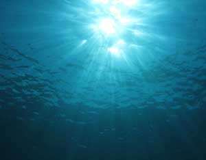

15 Fun And Surprising Facts About The Earth’S Oceans
The Earth’s oceans are odd, beautiful and intriguing - and we know surprisingly little about them. Learn why oceans comprise a strange and wonderful world all their own.
By Aubrey Vaughn
Aug. 1, 2009
The oceans may make up 70 percent of the Earth’s surface, but we know very little about them, especially compared to our knowledge of the Earth’s land spaces - or even those of Mars and Venus. Consider this: We made it all the way to the moon a full four years before we saw the largest mountain range on Earth, lying below the oceans' surface.
Life in the oceans of this planet, even the very little we know about is unrivaled in its beauty and strangeness. Furthermore, the promise of what it may teach us about the planet we live on stretches the imagination.
To give you an idea of the numerous surprises that dwell in the oceans, and hopefully make you eager to learn more, here are 15 fun tidbits about the awe-inspiring world that lies below the oceans’ surface.
- For starters, did you know that 94 percent of life on Earth is aquatic? That makes us land-dwellers a very small minority.
- About 70 percent of the planet is ocean, with an average depth of more than 12,400 feet. Given that photons (light) can’t penetrate more than 330 feet below the water’s surface, most of our planet is in a perpetual state of darkness.
- Fifty percent of the United States (in terms of our complete legal jurisdiction, which includes ocean territory) lies below the ocean.
- The deep sea is the largest museum on Earth: There are more artifacts and remnants of history in the ocean than in all of the world’s museums, combined.
- We have only explored less than 5 percent of the Earth’s oceans. In fact, we have better maps of Mars than we do of the ocean floor (even the submerged half of the United States).
- The longest mountain range in the world is under water. Called the Mid-Oceanic Ridge, this chain of mountains runs through the middle of the Atlantic Ocean and into the Indian and Pacific oceans. It runs more than 35,000 miles long, has peaks higher than those in the Alps and it comprises 23 percent of the Earth’s total surface.
- We didn’t send divers down to explore the Mid-Ocean Ridge until 1973 - four years after Neil Armstrong and Buzz Aldrin walked on the moon - when a French-American crew of seven entered the 9,000-foot-deep Great Rift in the French submersible Archimede.
- The ocean boasts an array of unusual geographic features, such as pillars that reach several stories high and chimneys that send up sulphuric acid. In the ocean-floor neighborhood of the Gulf of Mexico, brine pools mark the floor, along with underwater volcanoes that spew mud and methane, rather than lava.
- These wonderful formations aren’t barren, either. Underwater hot springs that shoot water that’s 650 degrees Fahrenheit - hot enough to melt lead - boast a profusion of life, from 10-foot tall tubeworms to giant clams that function without digestive systems.
- Many of the rules that apply on land are turned upside down in the ocean, some literally. Beneath the surface, often not far from popular vacation beaches, are underwater lakes, waterfalls and even upside-down lakes! (You might have to see it to believe it. Check out Gallo’s video of Underwater Astonishments to see a wealth of underwater marvels.)
- Much of the life in the oceans, as on land, is invisible to the naked eye. For instance, if you’ve ever swallowed a milliliter of ocean water, know that you also gulped 1 million bacteria and 10 million viruses - give or take a few. No need to worry though, swimmers around the world swallow some ocean water during their ventures into the water, without ill effects.
- Also living on hydrothermal vents are 140- to 160-foot long jellies, which use a process called chemosynthesis (think photosynthesis, but adapted to zero sunlight) to convert the hydrothermal water into simple sugars for food. Most striking are the extremes in which the jellies live. Temperatures vary drastically near the vents, so while the tops of the jellies enjoy lows of 37 degrees, their bottoms (at the vent) bask in a toasty 392 degrees - happy as clams, or jellies, rather.
- Extreme temperatures aren’t the only seeming barrier to life, but again, the laws below the surface differ from those above. The immense pressure of the water on a human diving to greater depths is one of the biggest hurdles to exploring the deepest parts of the oceans - yet, at depths that would crush the Titanic like a Coke can, crabs, octopuses and tubeworms go about their business.
- But even the more familiar ocean creatures have interesting and unexpected traits and habits. Did you know that an octopus’s speed of travel never exceeds that of the surrounding waves? That same octopus employs amazing camouflaging talents - changing color, shape, and even its texture, pattern and brightness - to blend in to its surroundings.
- Another example is the male squid, which turns a warm brown color to attract females, or white to warn away interloping males. Most intriguing is that the male never shows its white, aggressive side to the female. In a colorful show of marine multitasking, the male squid will turn the side facing his prospective mate the welcoming brown, while simultaneously turning sideways so that she can’t see he’s made his outward-facing flank white.
Hooked yet? Find out more about many of these ocean facts, along with dozens of others and some great underwater photos and video. The oceans may truly be the last unexplored wilderness on Earth. And science shows that as breathtaking and surprising as they are, they also hold the potential for perhaps millions of discoveries. From finding new species and unorthodox geologic activities and unusual geographies, to better understanding the potential of our planet and life on it, the possibilities in the ocean are truly endless.
Learn More about the Oceans
National Oceanic and Atmospheric Administration
National Geographic: Oceans
Woods Hole Oceanographic Institution
Cousteau.org
Blue Legacy, founded by Alexandra Cousteau
Explore the depths of the oceans yourself with Google Earth: Oceans.
Get Involved: Conservation and Awareness Programs and Projects
World Oceans Day
The Ocean Project
World Ocean Network
Ocean Conservancy
Blue Legacy's Blue Planet Expedition
Ocean Videos
Graham Hawkes Flies Through the Ocean
Richard Pyle Dives the Reef's Twilight Zone
David Gallo on Life in the Deep Oceans
Plus, more video lectures from leading ocean scientists from TED: Ideas Worth Spreading.
From PBS, Jean-Michel Cousteau: Ocean Adventures
Something to look forward to: Disney's Oceans movie, scheduled for Earth Day 2010. Watch the Oceans trailer.

FOTOLIA/DEREK BROUSSARD
The Earth's oceans are full of funny, regal and fantastic organisms and geographic features.
|
|
|